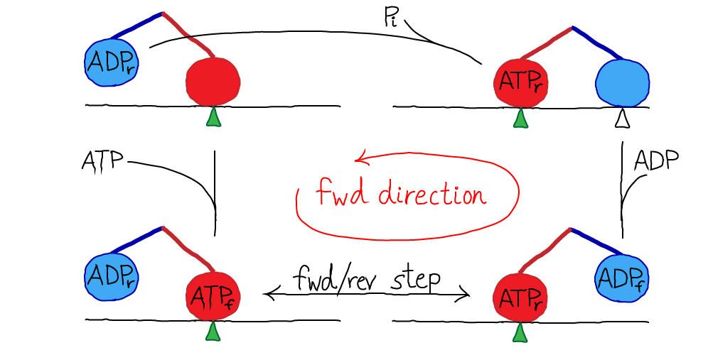
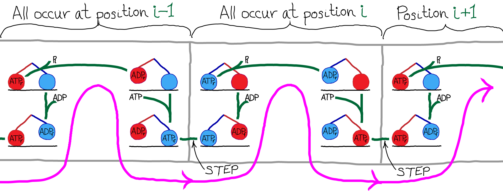
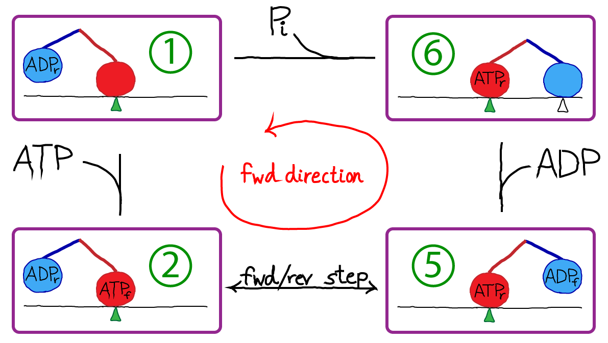
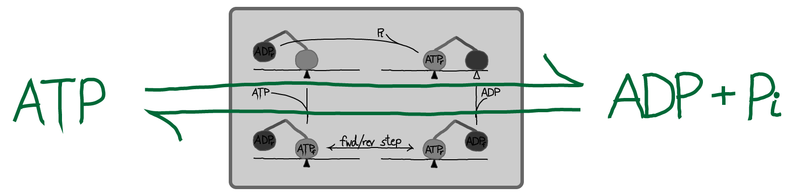
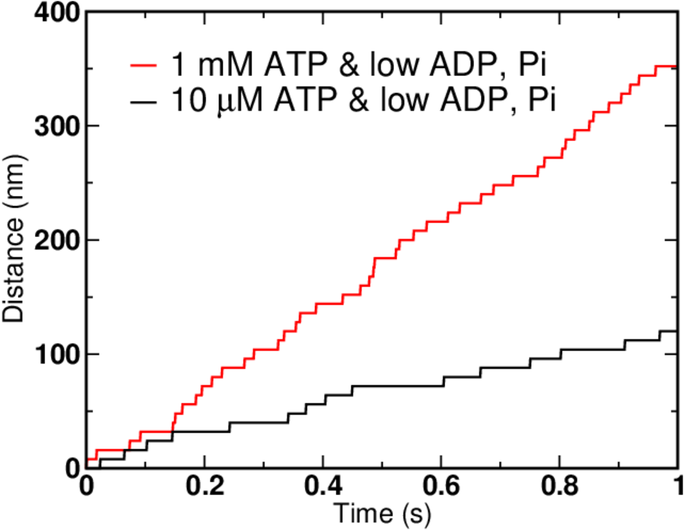
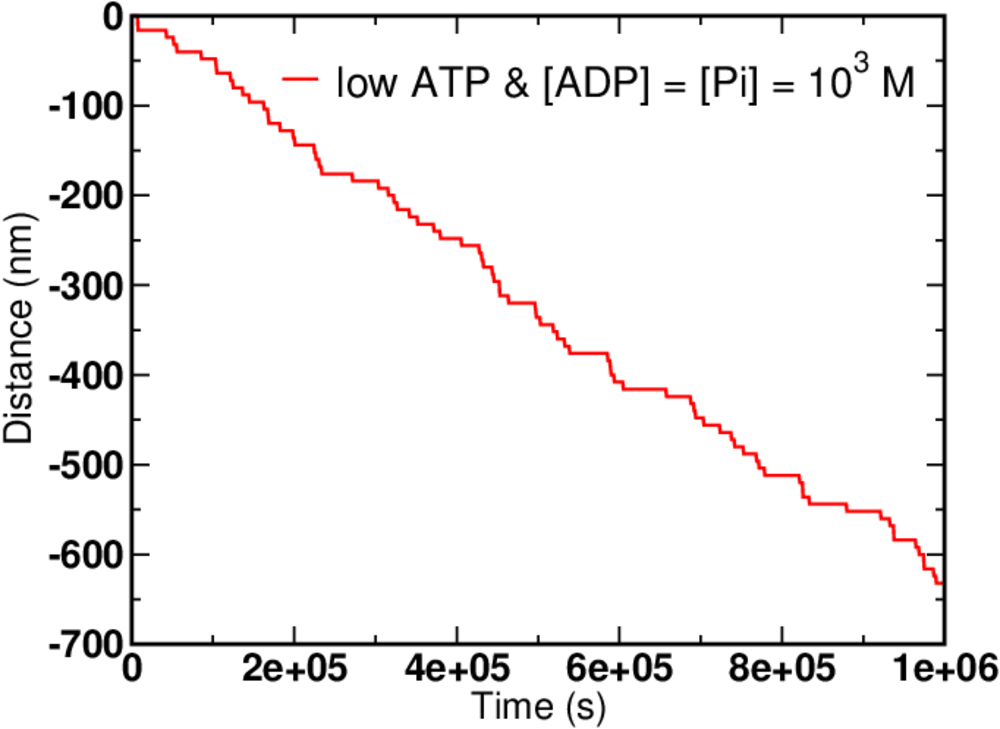
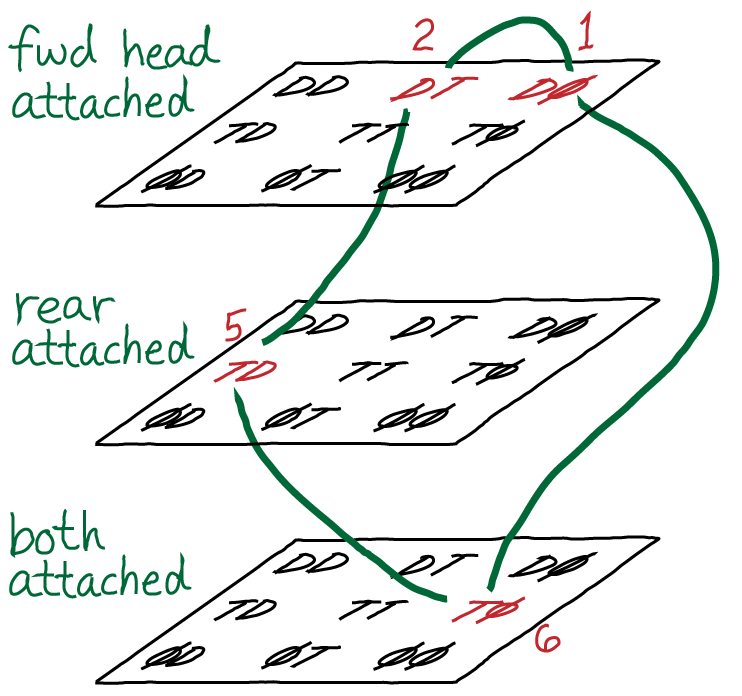

Kinesin is a two-headed motor, like many others (dynein, and most myosins). Each motor head is capable of hydrolyzing ATP, which results in a conformational change. The heads are also coupled to one another via "neck linker" domains. A simplified version of kinesin's cycle is shown below.

In the figure, the green triangle represents a fixed location along the microtubule, which is shown as a simple horizontal line. The colored ovals are the two heads, and the colored lines are the neck linkers. The chemical state is indicated in the oval, with a subscript noting whether a head is forward (f) or in the rear (r). The top-most transition, which is simply unbinding of the rear head, is somewhat confusing in the four-state diagram because the identity of the forward/rear heads has switched: note the green triangle and see figure below.
Kinesin moves along microtubulue filaments in the cell and plays a key role in mitosis. The steps are 8nm in length and discrete based on the polymeric structure of the microtubule. Hence we can label the positions as (..., i-2, i-1, i, i+1, i+2, ...). The cycle of chemical and mechanical steps is probably best visualized in the context of a microtubule. The pink line below shows the order of steps in purely forward motion.

To turn our original cartoon into a concrete model, we simply need to assign rate constants. We will assign rates derived by Liepelt and Lipowski ("LL" - see References) on the basis of experiments. Notice that the state numbers (1, 2, 5, 6) are not consecutive: this is simply for consistency with LL; our states are a subset of theirs, although this does not lead to significant deviations from the original model's behavior for the cases examined here.The first thing to do with a kinetic model is write out the basic mass-action equations. For brevity, we'll note the first two here, \begin{align} \frac{ d \conc{1} }{ dt} & = \conc{6} \, k_{61} + \conc{2} \, k_{21} - \conc{1} \, \conc{ATP} \, k_{12} - \conc{1} \, \conc{Pi} \, k_{16} \\ % \frac{ d \conc{2} }{ dt} & = \conc{1} \, \conc{ATP} \, k_{12} + \conc{5} \, k_{52} - \conc{2} \, k_{21} - \conc{2} \, k_{25} \end{align} where $\conc{X}$ is the concnetration of state X and $k_{ij}$ is the rate constant from state $i$ to $j$. Remember, you can always consult the Notation page.
We apply the condition of detailed balance (equal and opposite flows) to all legs of the cycle. For the 1-2 and 2-5 steps, we have
\begin{align} \conceq{ATP} \, \conceq{1} \, k_{12} &= \conceq{2} \, k_{21} \label{det_i_ii} \\ \conceq{2} \, k_{25} &= \conceq{5} \, k_{52} \label{det_ii_v} \\ \conceq{5} \, k_{56} &= \conceq{ADP} \, \conceq{6} \, k_{65} \\ \conceq{6} \, k_{61} &= \conceq{Pi} \, \conceq{1} \, k_{16} \label{det_i_vi} \end{align} To be clear, we are not assuming our system is always in equilibrium. Rather, we are establishing that our system should be capable of reaching equilibrium consisent with physical principles.Although each of the equations \eqref{det_i_ii} - \eqref{det_i_vi} indidvidually represents a detailed-balance condition for a particular process, together they yield a single constraint on the rate constants. To see this, solve for $\conceq{2}$ in \eqref{det_ii_v} and substitute the result in \eqref{det_i_ii}; then continue this process and successively eliminate all the state concentrations. You will be left with a relation between the rate constants and the concentrations of ATP, ADP, and Pi: \begin{equation} \label{atp_equil} \frac{ k_{12} \, k_{25} \, k_{56} \, k_{61} } { k_{21} \, k_{52} \, k_{65} \, k_{16} } = \frac{ \conceq{ADP} \, \conceq{Pi} }{ \conceq{ATP} } \equiv K_d \end{equation} where we have noted that the ratio of concentrations on the right is nothing other than the equilibrium constant for ATP, its effective "dissociation" constant. The relation \eqref{atp_equil} implies that once 7 of the rate constants are known, the 8th is determined by thermodynnamic considerations.
Following LL, we set $K_d = 4.9 \times 10^5$ M, which is a large value reflecting that, in solution, ATP hydrolysis is strongly favored over synthesis - ADP will predominate over ATP unless ATP is synthsesized. In a cell, of course, ATP is constantly being synthesized to maintain a non-equilibrium condition in which ATP stores free energy available for use by many processes.
A Subtlety. As shown in the diagram with the "cycle" superimposed on a microtubule, the states really are specific to the position (i, i+1, ...). Nevertheless, the equilibrium analysis we just performed ignoring the position is correct. To see this, consider an ensemble of single kinesin molecules, each walking on a separate circular microtubule. In such a case, it is clear that the average population of each chemical/configurational state is independent of the positional state i - e.g., the population of state 6 is the same at every position. Hence, the equilibrium properties can be ascertained by assuming we have a simple cycle: the correct populations are obtained, aside from a trivial factor accounting for the number of positions, which is the same for each state.

An alternative point of view is that kinesin may be seen merely as a catalyst for ATP hydrolysis (and synthesis, under suitable conditions), as sketched above. In this picture, the stepping of kinesin can be considered an unnecessary consequence of catalyzed event: see also the "thought experiment" proposed for ATP in its role as an activated carrier. The basic view of ATP is correct although to be fully accurate, one would have to account for work done against viscous forces in typical steps - see below.
The issue of work. In the present model, for simplicity, there is no "load" or force on our motor - and so mechanical forward/backward steps perform no work. This is unphysical because a viscous/frictional force will always oppose the direction of motion. Nevertheless, the zero-load case is of interest for building understanding of motor systems, and compared to experimental situations, the viscous force may be considerably smaller than forces which are applied on such motors.
Specific rate constants are given in the table below, which are derived from the LL paper.
| Process | Symbol | Value |
|---|---|---|
| ATP binding | $k_{12}$ | $2 \times 10^6$ / (M s) |
| ATP unbinding | $k_{21}$ | $100$ / s |
| Forward step | $k_{25}$ | $3 \times 10^5$ / s |
| Reverse step | $k_{52}$ | $0.24$ / s |
| ADP unbinding | $k_{56}$ | $100$ / s |
| ADP binding | $k_{65}$ | $2 \times 10^4$ / (M s) |
| Hydrolysis and Pi unbinding | $k_{61}$ | $0.74$ / s |
| Pi binding and synthesis | $k_{16}$ | $2 \times 10^4$ / (M s) |

Not surprisingly, higher ATP concentration leads to faster motion. But there are limits on how fast the motor can move - see the exercises for hints. In the graph above, the ATP concentration increased 100-fold, but the speed of the motor clearly did not.
Although it is safe to say that a given kinesin motor (there are many kinds) evolved to move in a single direction, it is of physical interest to push our model to extremes. In particular, given that all molecular processes are reversible, can we get our motor to run in reverse? You should recognize that forward steps are expected whenever the nucleotide concentrations are shifted toward larger ATP - i.e., when the actual concentrations differ from their equilibrium values and excess ATP is present as in \eqref{atp_non_equil}. By the same argument, reverse steps are expected when there is an excess of ADP and/or Pi - when the opposite of \eqref{atp_non_equil} holds.

Note the timescale and nucleotide concentrations compared to previous data with forward stepping. Such concentrations are unphysical as can be seen from the exercises.These simulations were performed using BioNetGen, a rule-based platform for kinetic modeling. The source code for the model (a .bngl file) can be downloaded by right-clicking here.

Using a conceptual framework similar to what was presented in our advanced discussion of cycle logic, we can also consider a more complete state space for the kinesin motor. In the figure above, D, T, and $\phi$ represent possible states of an indivdual motor head: ADP-bound, ATP-bound, and empty, respectively. A pair of symbols represents the rear/forward combination - e.g., "DT" means the rear head is ADP-bound and the forward head is ATP-bound - using the convention that right is forward.
The space shown here may seem large and complicated, but really we have omitted a number of possibilities: that both heads could become detached, the position on the filament, additional configurational states, and states with both ADP and Pi bound.